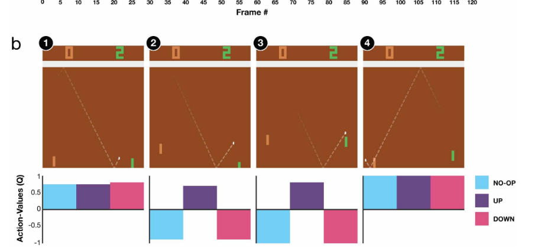

A Central goal of general artificial intelligence

The deep Q-network agent,receiving only the pixels and the game score as inputs,was able to surpass the performance of all previous algorithms and achieve a level comparable to that of a pro-fessional human games
Train the network to minimize the TD error R + delta * max_a Q(s_(t+1), a) - Q(s_t, a). During optimization, keep the parameters off the Q(s_(t+1), a) term fixed. You make a copy of the Q network and call this the target network. Practical points that make it work Experience replay Avoid correlation of samples used to train the network by creating a buffer of experience. When training the Q network, take a mini batch from the buffer and use it for training. When playing the game, keep adding tuples of reward, action, state, state at next step. The buffer will contain these tuples and can have a maximal capacity (you can prioritize what you get out of the buffer and how you replace the elements in the buffer when the buffer is full). Frame stacking To create the states of the RL problem, stack 4 consecutive screens of the game. This fixes some pixel problems with Atari and shows the model how the frames are changing according to actions. Target network update Since the target network is fixed during optimization, one can decide to update the target network every C updates of the Q network. This minimizes oscilations in updates and the chance of divergence. Error function change The error term from the TD update is clipped to be between -1 and 1. This effectively makes the loss function to be the absolute value of the difference for values that are not in between -1 and 1.